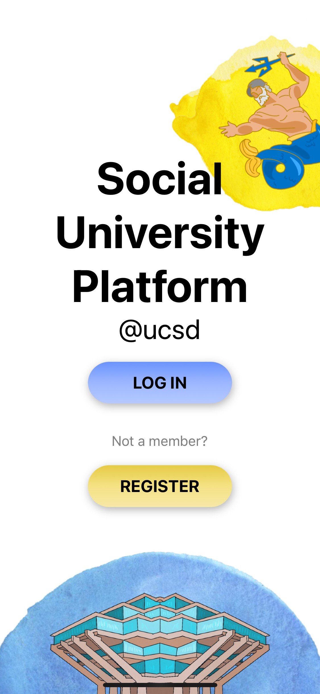

I developed an automated Twitter bot which uses replies to tweets with images of groups of people that are
not wearing masks. This was created during the COVID-19 pandemic, with the intention of trying to urge as many
people to wear masks. The bot used a computer vision face mask detection model to identify faces without masks.
The source code for the bot can be found here.
python, computer vision
Social University Platform

I created an iOS app using React Native, NodeJS, and Firebase to connect students
at UCSD with clubs and organizations in a team of 10, applying an Agile workflow.
JavaScript, React Native, NodeJS, Firebase
Spotify Mad Libs
Constructed a React/Node Web Application using the Spotify API, which displays amusing messages
based on the user’s top artists and tracks, and allows for user input of verbs, adjectives, and nouns.
ReactJS, HTML, NodeJS, CSS
Football Analytics and Odds Web Scraper
Using JavaScript, created an automated program to scrape statistics from
various websites, the odds for each game, and update scores hourly.